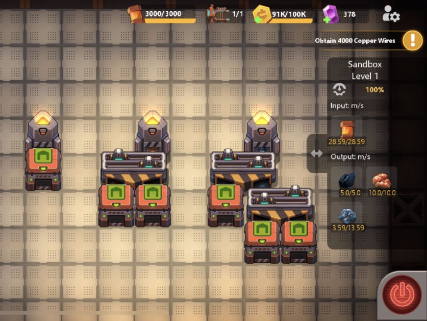
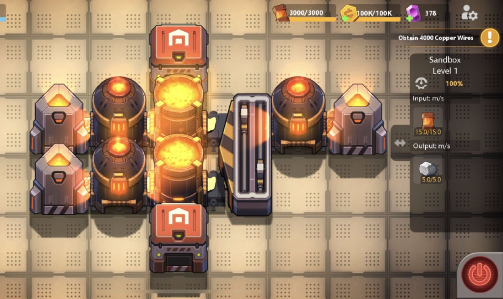
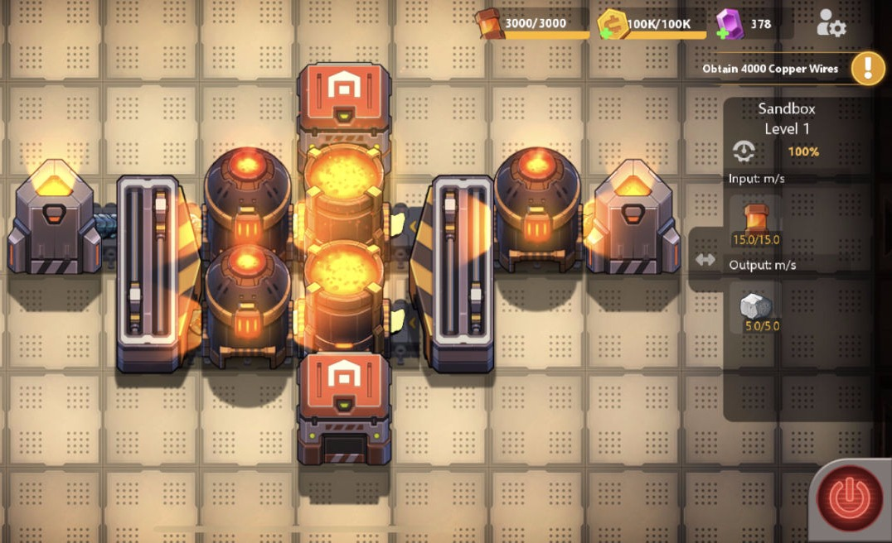
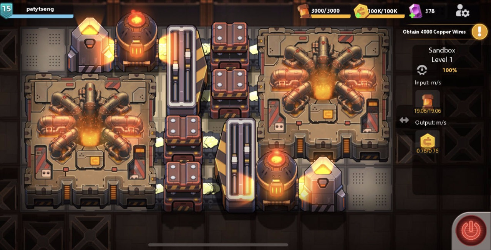
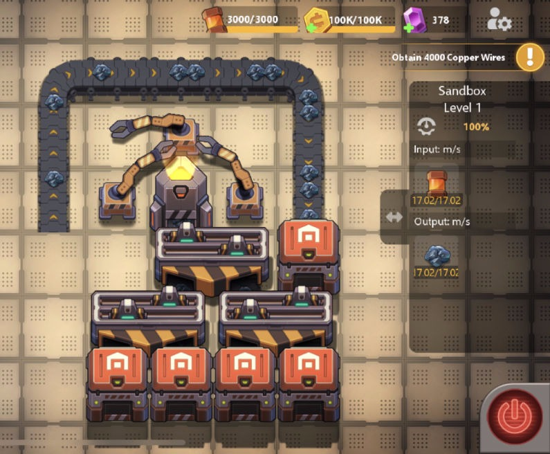
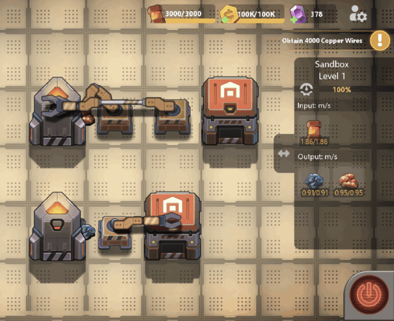
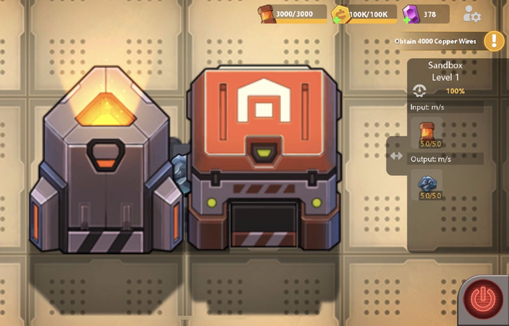

Factories can have two methods of input materials either with a Synthesizer or an Importer. Both of these are, as of the most recent update to this article, limited to 5 buildings per factory. On certain builds with lower levels of complexity, fully utilizing the synths is essential to maximizing efficiency.
Synthesizers have no experimentally determined limit in production rate. The limit to taking out materials is the device directly next to the synthesizer. In other words, the output of a synthesizer is most immediately limited by the speed limit of the next device to the synthesizer.
Technique 1: Splitters
Normal splitters can pass up to 15 item/s. In comparison to belts (at 5/s), splitters allow you to pull more out of a synthesizer. To maximize your usage of a synthesizer, splitters are the best option.
Some demonstrations:

As is probably obvious, the synthesizer outputs from left to right are: coal, copper, and iron. Using two splitters (right) should output 15 items/s but as of the version used for making this screenshot, there are some minor glitches with splitters. You may also notice that exporters have a maximum 5 items/s input.
Now a comparison between two steel builds:


As you can see, the bottom demonstration has the same throughput despite only using one iron synthesizer on the left side.
Technique 2: Heaters
Heaters have been a bit glitchy, but it seems that the intent is for heaters to pass 10 items/s. In reality, they usually only get ~9 items/s.
This can be useful (is usually only used) when space is limited like in the credit build below:

Technique 3: Grabbers
Grabbers are great for pulling items from synthesizers. However, setting things up for a grabber to be useful usually take A LOT of space. They are only used to squeeze out items when the direct output of the synthesizer is already maximized.
A simple unit with this idea:

Do note that double-grabbers as seen below are faster than single grabbers:

Final Note
Now combining all these ideas, it is possible to build a better way of extracting raw materials than this:

And now, a simple raw materials build that is faster: